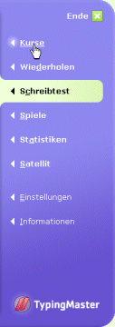

Sie können dabei irgendeinen von den vorhandenen Schreibtests wählen, aber auch einen eigenen nutzen. Wenn Sie dann mit der Bearbeitung des Kurses fertig sind, machen Sie den Test noch einmal, um zu sehen, wie viel Sie sich verbessert haben.
Um einen Schreibtest zu machen, klicken Sie auf "Schreibtest" rechts im Programmmenü.
Wenn Sie nach dem Test wieder zum Programm zurückkehren möchten, klicken Sie im Programmmenü auf "Kurse". Sie kehren dann automatisch in die Lektion und in die Übung zurück, wo Sie vorher waren.